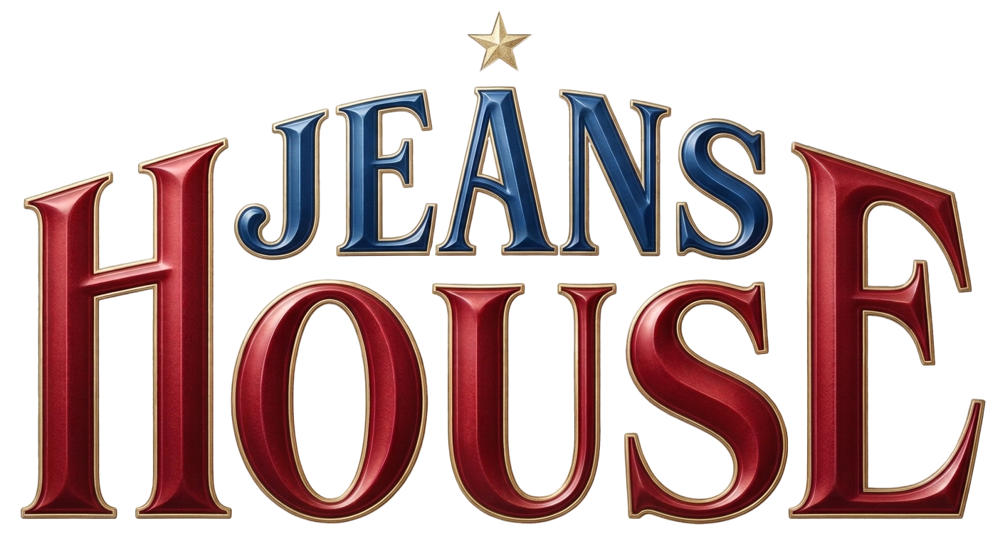
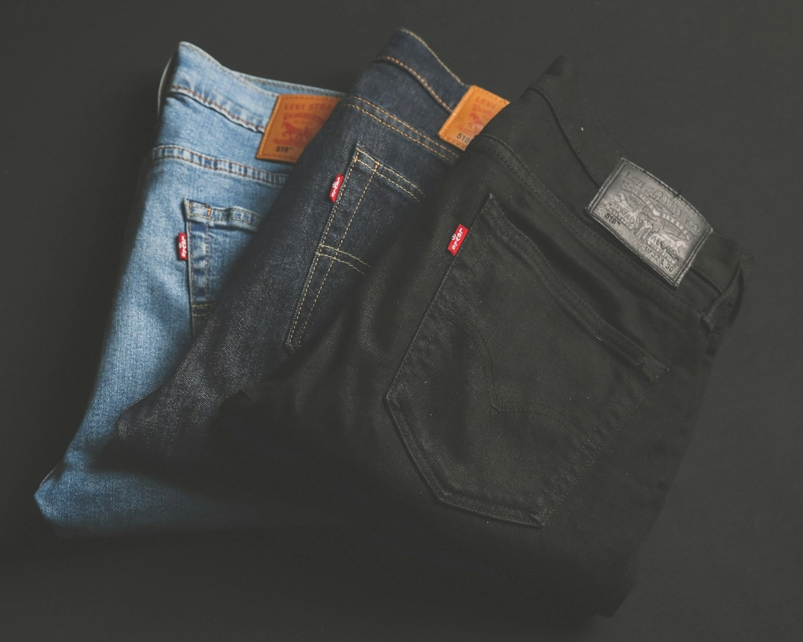
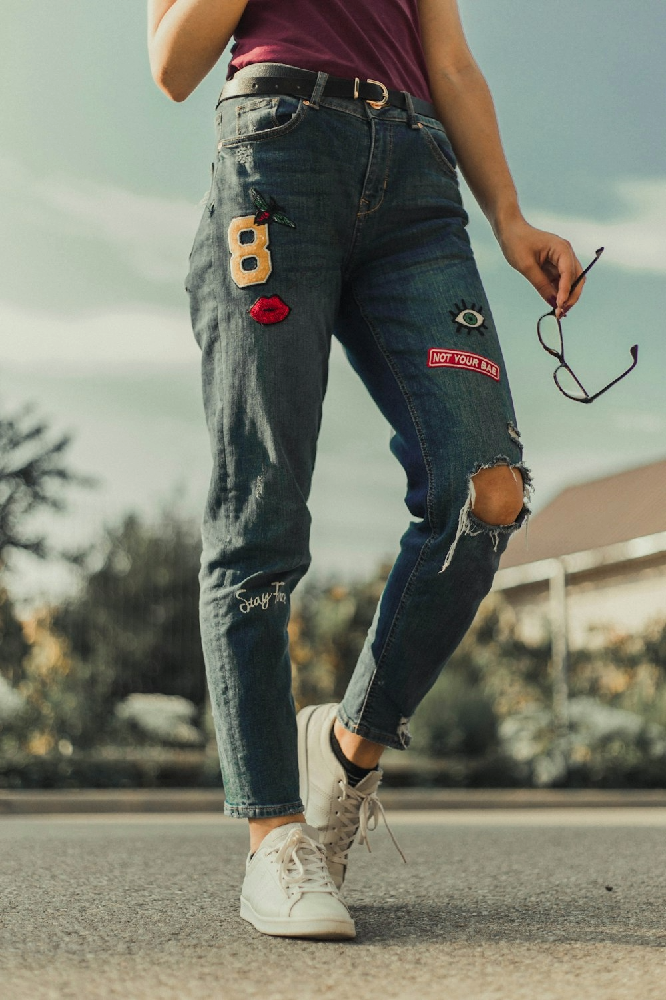

Der Klassiker
Zeitlos, vielseitig und passend für viele Gelegenheiten.

Besuch planenDein Jeansladen in Hamburg-Wandsbek
Die richtige Jeans findest du nicht nur auf einem Bildschirm. Entdecke deinen Schnitt, probiere in Ruhe an und lass dich persönlich beraten.
Besuch uns im Store Unsere Beratung entdecken →
Mehr als eine Hose
Jede Jeans fällt anders aus. Gemeinsam finden wir heraus, welcher Schnitt zu deinem Körper, deinem Alltag und deinem persönlichen Stil passt.
So beraten wir dich →
Finde deinen Stil
Entdecke verschiedene Looks und probiere deine Favoriten direkt bei uns an.
Zeitlos, vielseitig und passend für viele Gelegenheiten.
Ein lässiger Look und Bewegungsfreiheit für deinen Alltag.
Wir helfen dir, Schnitt, Farbe und Waschung zu entdecken.
Stationary first
Stoffe fühlen, Schnitte vergleichen und verschiedene Größen anprobieren: Im Store kannst du selbst erleben, was zu dir passt. Wir nehmen uns Zeit für deine Fragen.
So findest du unsDarauf kannst du zählen
Wir helfen dir, Schnitte und Größen zu vergleichen.
Du kannst Material und Passform selbst erleben.
Besuche uns in Wandsbek und entdecke die Auswahl vor Ort.